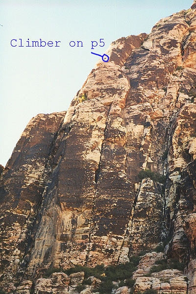
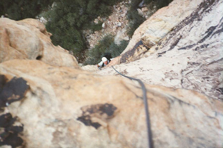
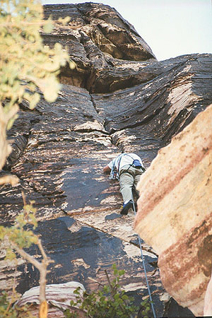

Red Rocks "Cat in the Hat"
-
Grade II-III, 5.6+, 5 pitches
-
October, 1999
After the airport and a stop by Jim’s apartment on Saturday, Steve and I raced out to Red Rocks, hoping to climb a few pitches of Cat in the Hat, a recommended moderate climb. Glad to be on the trail, we made the half-hour hike, stumbling out of the brush just before another pair of climbers intent on the same route. Consequently, we felt pretty rushed, so as to let these guys get started after us.
I had the first pitch, and enjoyed the great variety of rock there. The route follows a left-leaning crack with great jug holds formed by the black desert varnish adhering to the sandstone. After about 80 feet, I followed a crack which leaned back right, then came out on a ledge. Another crack led up to a bolted belay anchor. Steve followed, then led the second pitch up to a stunted tree. Here, we met a group of climbers descending, and as I set out on the third pitch, more were rappelling down just over my head. People kept me well informed, so I could reach a good stance when a rope was being thrown nearby, or a curious figure would come spindling down right next to me. “Hi.”
I needed to traverse around an overhang, but went too high, making the traverse a bit sketchier. I had a smooth wall for hands, so I relied solely on my feet, and actually made a little hop across a blank stretch. That done, I was in a steep and highly enjoyable crack that eased off as it approached a boulder belay. When Steve arrived, we discussed our options, and decided to rap down, as it was getting late. We sat for a while, enjoying the peace of the canyon in late afternoon. The sun had descended behind the ridge, allowing us to see the mix of black watermarks, red and brown stone, and occasional green brush.
This ended our first adventure on Cat in the Hat. But Tuesday we came back early in the morning for more. We wanted to finish it, and we knew we could do it without risking me missing my plane Wednesday morning.
This time Steve led the first and third pitches. I found the second pitch steeper and more interesting than I remembered it, and Steve called the third pitch his favorite ever. He did a great job too, showing me the proper traverse, which is more of a diagonal starting lower. I complimented his protection rigging, which was exactly like a textbook picture.
It was still early at this point, and we heard voices in the canyon. Six helmeted figures trudged up to the cliff, and we were glad we’d gotten such an early start. I set off on pitch four, which traversed around a corner onto new terrain. This was fun, as I’d never climbed a long traverse before. Rather than climbing above your partner, you climb away to the side. I took a while because I’d climbed too high, and wasn’t sure where to end. Finally, I had to down-climb quite a ways. If you climb the route, just remember that the ledge which begins pitch five is below the ledge which begins pitch four by about 15 feet. It’s not far away either, only about 35 feet.
The last pitch was mine this time, and boy did I enjoy it. The exposure was exhilarating, with a view down to Steve, and the canyon hundreds of feet below him. I climbed on black rock, finding excellent nut placements in the crack. What a safe climb, I thought. There was a pretty hard section where the crack widens to a “V.” Once beyond that, I moved out onto a face of white sandstone, with nubbins for hand and foot. A single bolt greeted me, and I eased into another crack above it, and then to the bolted belay. Wow, what a fun pitch! A great variety of terrain in 100 feet!
Steve came up raving about it too, and two happy climbers sat awkwardly at the anchor, looking around at the beautiful terrain.



Coming back to earth, we flaked the ropes for a double-rope rappel. This rappel led us to the top of pitch three. Another one got us to the top of pitch two. Here, we encountered the parties we’d seen earlier. A cross woman expressed dismay upon hearing I was going to pull the rap ropes down. Lucky for her, they were stuck! However, their guide was almost to the anchor, and he freed the knot from the constriction it was held up on. We should have positioned the knot past the lip of the belay ledge.
The rope didn’t touch her as it came down, and Steve and I continued with a single rope rappel, then a final double rope rappel to the base. It was only 12:30 or so, and we’d planned a climb of Solar Slab gully next, but a painful blister on my right heel caused me to reluctantly concede defeat. We were very happy with our climb though, and calling it quits felt a-ok.
After a short exploratory drive, we stopped in a cute little town with horses grazing on the elementary school baseball field, and I called Kris. I ended up flying out that night to see her earlier than expected.